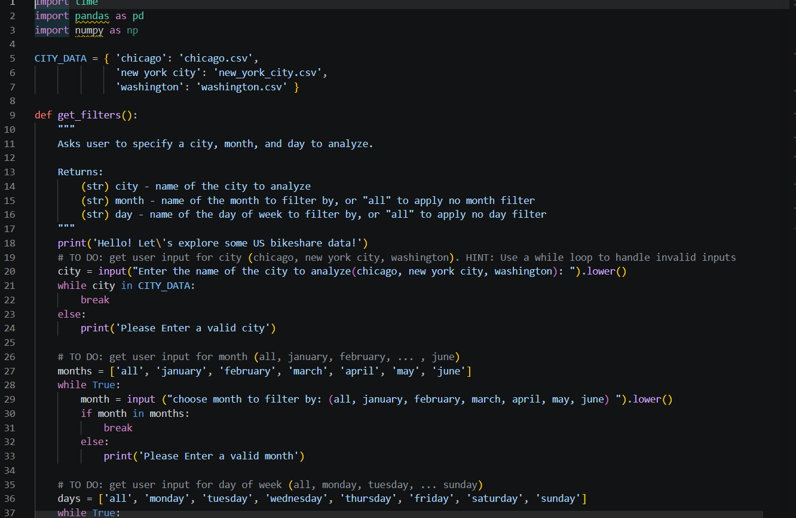
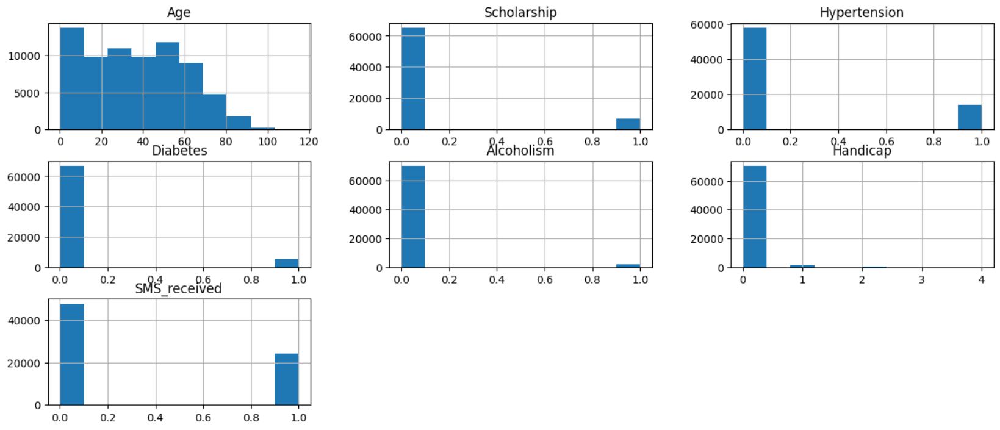

Data Analyst specializing in Excel, SQL, Python & Power BI. I help teams understand their data and act on it confidently.
From raw data to decision-ready dashboards — I focus on making data simple, clear, and genuinely useful.
Messy data? I clean, structure, and prepare it for analysis using Excel, Power Query, and Pandas — so you can trust your numbers.
I build dashboards and visual reports in Excel and Power BI that make insights immediately clear and easy to act on.
Writing optimized queries to extract, join, and explore data from relational databases — turning business questions into precise data answers.
Using Pandas, NumPy & Matplotlib to handle large datasets, automate repetitive tasks, and uncover patterns at scale.
Designing and tracking KPIs that genuinely reflect performance — so teams can monitor what matters and drive real decisions.
Identifying trends, predicting outcomes, and helping teams stay ahead of problems before they become expensive.
A selection of projects across SQL and Python — built as part of the Udacity Data Analyst Nanodegree.
Explored a relational database using SQL to uncover meaningful business insights. Developed complex, error-free queries utilizing joins, aggregations, subqueries, CTEs, and window functions to analyze rental trends, customer behavior, and film category performance. Key findings included the popularity of family-friendly films, variations in store rental activity over time, and identification of top-paying customers — all presented through clear, well-designed visualizations.


Built an interactive Python program to analyze bikeshare data for different US cities. The program prompts users to choose a city, month, and day to filter the data, then loads the dataset with Pandas and cleans it by converting dates and extracting useful fields like month, day, and hour. Functions calculate key statistics including most common travel times, popular stations, trip durations, and user demographics — plus a feature to display raw data step-by-step on request.

Used Python (Pandas, NumPy, and Matplotlib) to analyze a real-world healthcare dataset and identify factors affecting patient attendance. Starting with thorough data wrangling — assessing structure, checking data types, finding duplicates, and validating quality — invalid age values were corrected, column names standardized, and unnecessary columns removed. EDA with visualizations compared variables like age, chronic conditions, SMS reminders, and neighborhood, finding that Ardim Camburi had the highest patient count and best show rate.



End-to-end data wrangling project using Pandas, NumPy, Matplotlib, Seaborn, Requests, and OS. Worked with two real-world financial datasets — one containing card information (client ID, card brand, credit limit) and another with user demographics (age, gender, birth details). Post-merge EDA revealed that male users dominate transactions and Mastercard is the most-used brand.


I'm a data analyst based in Palestine with a passion for turning complex, messy data into something teams can actually use. I work with Excel, SQL, Python, and Power BI to build analysis and dashboards that drive real decisions.
Whether it's a one-off analysis or an ongoing reporting pipeline, I focus on accuracy, clarity, and making sure the output is genuinely useful — not just pretty.
Have a project in mind? I'd love to hear about it. Send me a message and let's see how I can help you make the most of your data.